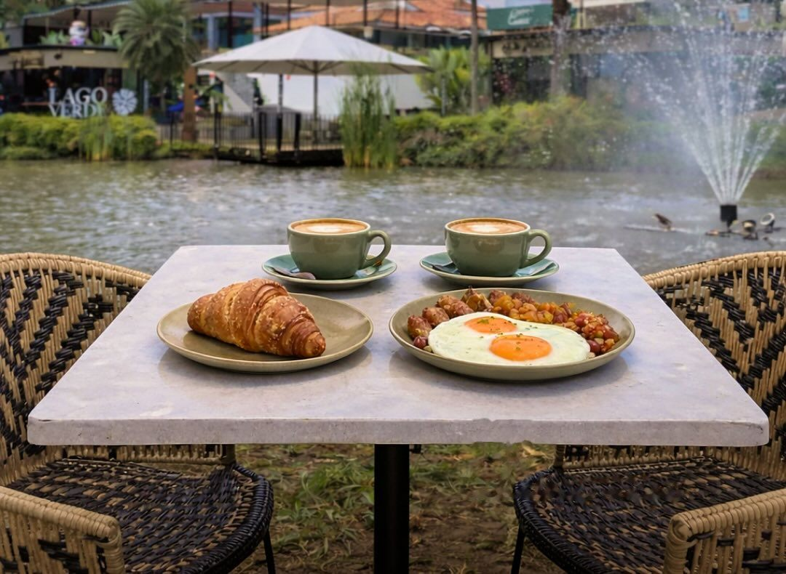
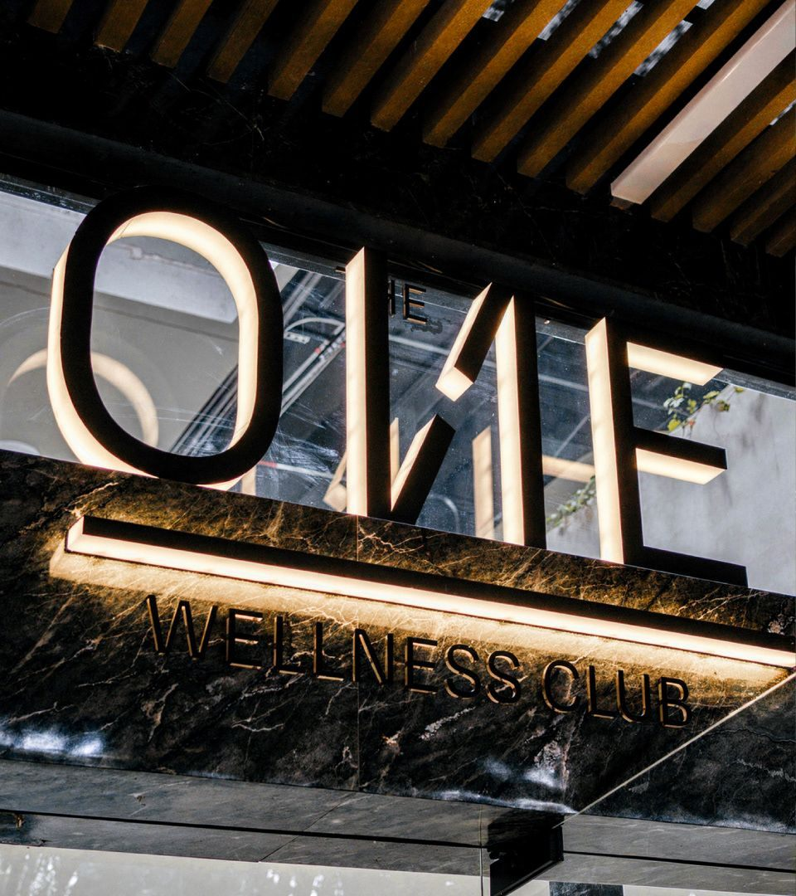
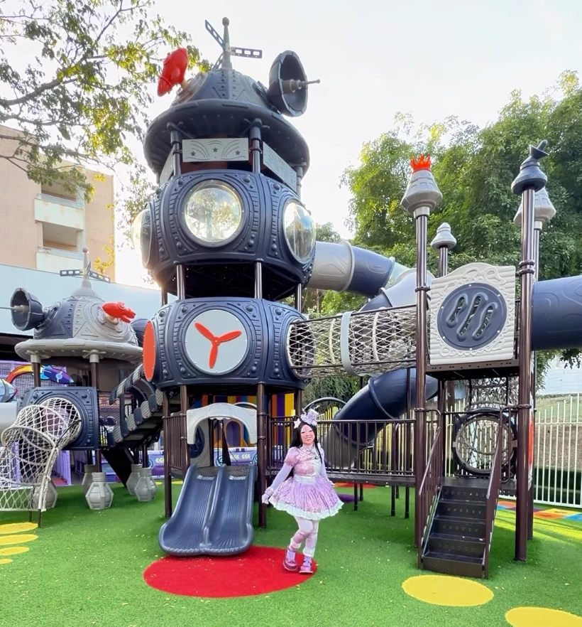
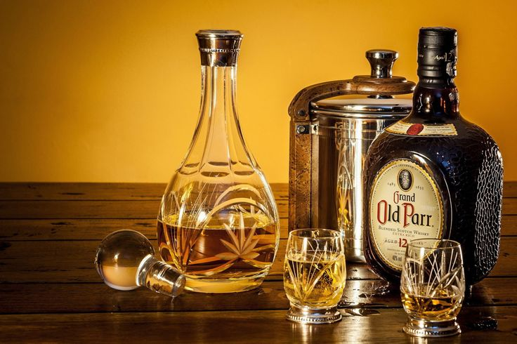
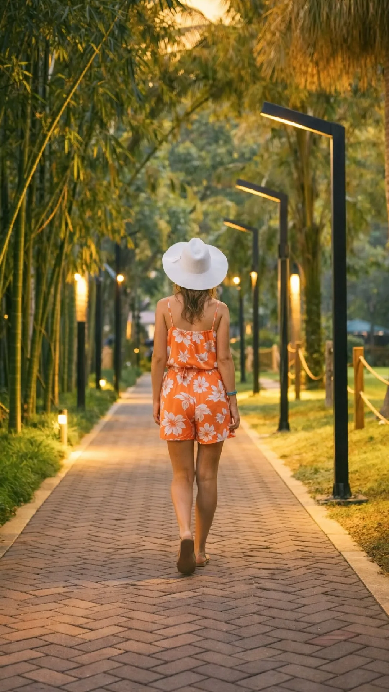
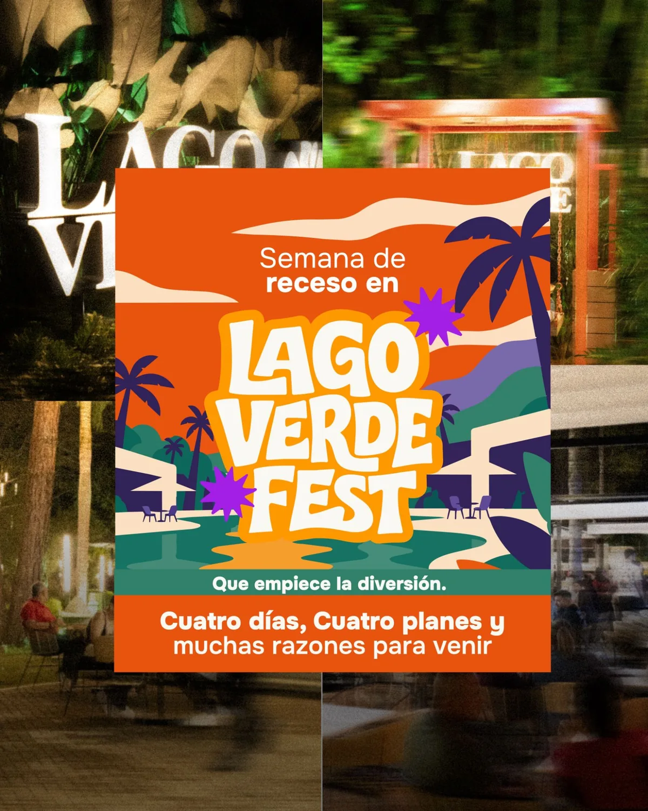
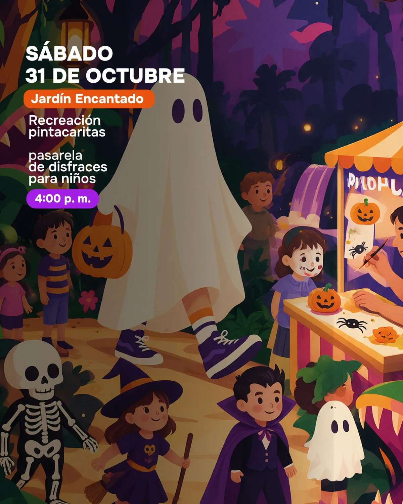
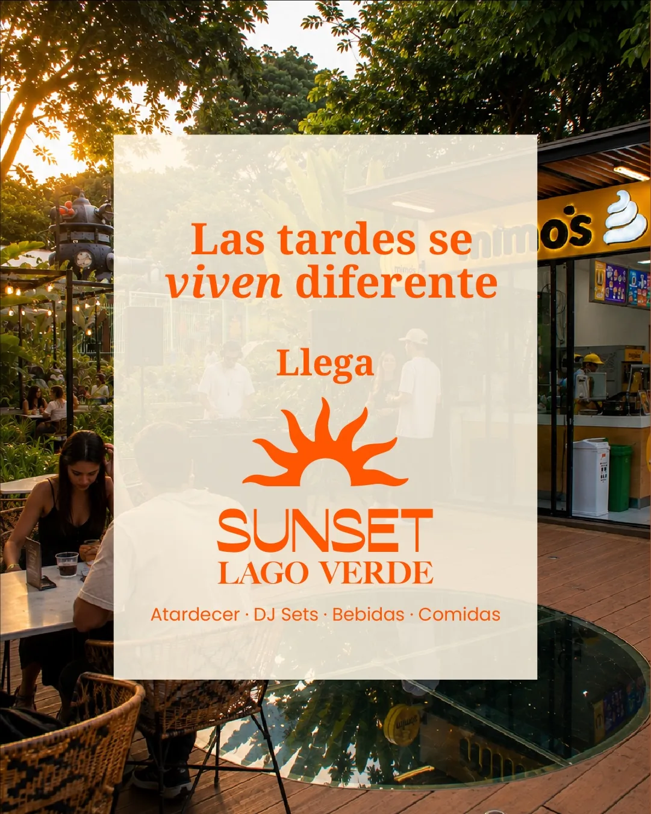
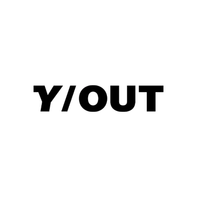

Bienvenidos a
Lago Verde
Parque Comercial en Pance, sur de Cali
Parque Comercial en Pance, sur de Cali
Lago Verde reúne más de 40 locales de gastronomía, bienestar, belleza y compras frente al lago, en Pance, al sur de Cali. Abierto de 5 a.m. a 11 p.m.
Más de 40 locales: restaurantes, panaderías, bares, gimnasio, estética, floristería y licores reunidos frente al lago, en Pance, al sur de Cali.

Cocina local, gourmet y saludable.

Desayuna o tardea con vista al lago.

Cervecerías y coctelería frente al lago.

Entrena desde las 5:00 a.m.

Zona de juegos gratis y espacios petfriendly.
Flores y arreglos.
Estética, barbería y servicios de belleza.

Vinos y licores.
En medio del sur de Cali, Lago Verde es la pausa perfecta: un Parque Comercial en Pance diseñado para disfrutar sin prisa frente al lago, del amanecer al anochecer, de 5 a.m. a 11 p.m. y con todo lo que necesitas en un solo lugar.
Aire fresco, café recién hecho y espacio para moverte: así arranca la mañana frente al lago.

Activa tu día en un lugar que solo transmite paz.

Café recién hecho y pandebono caliente al aire libre.

Un ecosistema natural para que tu peludo también disfrute del paseo.
Una pausa a mitad del día para comer bien, caminar junto al agua y consentirte.
Restaurantes gourmet, cocina local o comida saludable.

Observa el lago, alimenta los peces o simplemente déjate llevar.
Barbería y servicios de belleza para salir renovado.
Zona de juegos segura y sin costo para los más pequeños.
Cuando cae la tarde sobre Pance, el lago se ilumina y empieza el plan con amigos.
Opiniones en Google
ODIZEO
El Parque Comercial Lago Verde es un desarrollo arquitectónico muy bien logrado que combina de manera inteligente lo moderno con lo natural. Sus espacios abiertos, zonas verdes y diseño contemporáneo crean una atmósfera agradable que invita a quedarse y recorrerlo sin prisa.
Es un lugar versátil, perfecto para pasear, tardear, disfrutar de una buena comida o simplemente compartir una velada en compañía. La oferta gastronómica es variada y bien pensada, lo que lo convierte en un punto de encuentro atractivo para distintos gustos.
En definitiva, es un espacio que vale la pena conocer en Cali, no solo por su diseño, sino por la experiencia completa que ofrece alrededor del ocio, la gastronomía y el ambiente.
Jazmin L.
Un lugar nuevo muy hermoso que hay que visitar en Cali ✔️ espacios para tardear, reuniones de negocios y coworking
David M.
Espacioso, muy organizado y limpio. Todo es muy bonito!
Carlos Arturo H.
Un lugar agradable. Una vista ideal. Variedad de restaurantes. El lago espectacular.
Juan Carlos D.
Este parque comercial es una maravilla! ✨ La variedad de tiendas y opciones es excepcional, siempre encuentro lo que busco. El ambiente es súper agradable y moderno, perfecto para pasar el día. ¡Definitivamente lo recomiendo! 💯🛍️😊
Jorge Enrique P.
Un lugar donde puedes desayunar, almorzar y comer encuentras de todo en gastronomía
Irenita O.
Excelente muy lindo mucho verde un lugar muy tranquilo ,acogedor y los restaurantes súper buenos
Alejandro R.
Centro comercial campestre con un hermoso lago en su centro donde puedes disfrutar de variedad de comidas , gym y muchas tiendas más.
Fabián
Durante mi visita a Cali tuve la oportunidad de conocer el Centro Comercial Lago Verde, ubicado en el sector de Pance. Un lugar agradable, tranquilo y acogedor, que se destaca por su entorno, su arquitectura y la variedad de espacios para disfrutar. Es una excelente alternativa para salir de la rutina, compartir en familia o con amigos y conocer un poco más de los atractivos del sur de Cali. Sin duda, un lugar que recomiendo visitar cuando estén por esta zona del Valle del Cauca.
Elizabeth V.
Divino
Luis R.
Excelente ambiente natural, naturaleza y confort. Tiendas de ropa, comida y café ☕️
Maria J.
Amo lago verde, tiene espacios muy lindos y mucha variedad
Selección de opiniones públicas de Google Maps. Toca una para leerla completa.

Cuatro días de actividades para disfrutar en familia: búsqueda del tesoro, taller de cocineritos, recreación, sorpresas y mucho más junto a Gagalto.

Recreación, pintacaritas y pasarela de disfraces para niños. Sábado 31 de octubre a las 4:00 p. m.

Las tardes se viven diferente: atardecer, DJ sets, bebidas y comidas frente al lago.
Lago Verde no es solo para comer: entre restaurantes, gimnasio, bienestar y diversión, también encuentras tiendas de ropa, tenis y gorras con marcas como Coinflip y Y-OUT, en Pance, al sur de Cali. Pasea frente al lago, mídete lo que te guste y sal estrenando.
